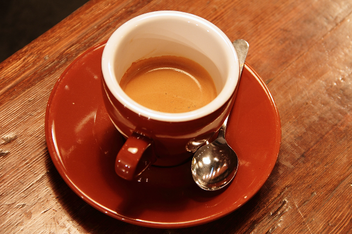
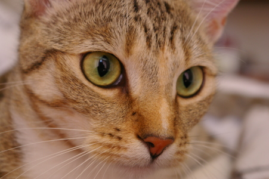

01 / A quiet morning
ONE PALETTE. MANY PERSPECTIVES.
Keep the colors and texture together.
Give each image the light it needs.
Preparing images…


Move the width slider or resize your window. Every image is recalculated from its original; exposure stays personal. Show the originals to compare, then bring the shared look back.
import { observeDitherDOM } from 'ditherto/dom';
const gallery = observeDitherDOM('img.dither', {
palette: [[37, 33, 59], [139, 80, 102], [221, 167, 123], [244, 236, 207]],
algorithm: 'atkinson', resample: 'area'
});
await gallery.ready;
await gallery.images[0].update({ exposure: 0.3 });
// On unmount:
gallery.destroy();The helper runs on the calling thread by default. This page supplies a shared worker through the render option. See the example source.